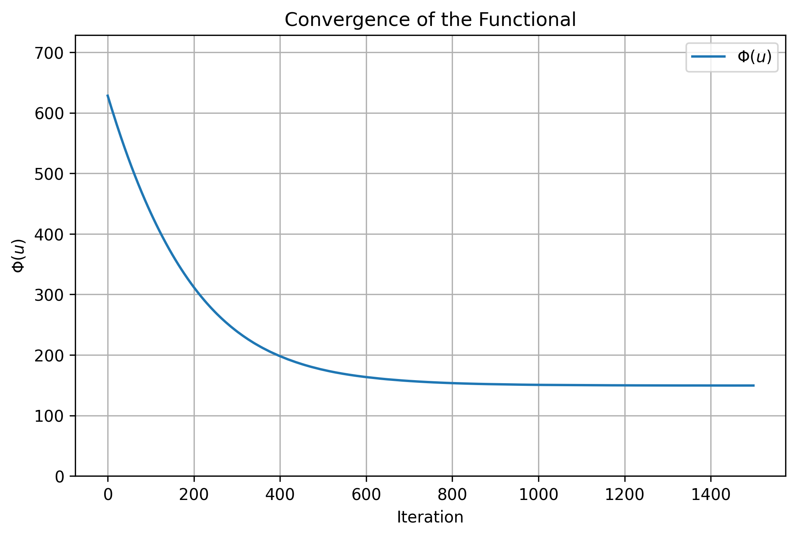

Total Variation Denoising and Gradient Descent
We've all encountered noisy images. Whether it's a grainy photo taken in low light or a blurry snapshot from an old camera, noise obscures the clarity we want. But did you know that the process of cleaning these images is more than just a technical trick? It's a mathematical problem called an inverse problem, and it's at the heart of many modern imaging techniques.
What Is an Inverse Problem?
Let's think about how noise corrupts an image. Imagine you have a perfectly clean image, which we'll call \(u\). Before you see it, a process happens-maybe a bit of noise is added, or the image is blurred. What you end up with is the noisy image \(f\). Mathematically, we can describe this as:
$$ f=Hu+\eta $$where:
- \(f\) is the noisy image you observe.
- \(u\) is the original clean image you want to recover.
- \(H\) models the process that might blur or transform the image.
- \(\eta\) is the noise added along the way.
Now here's the challenge: given only the noisy image \(f\), how do we figure out what the clean image \(u\) was? That's the inverse problem: working backward from the noisy result (\(f\)) to recover the original cause (\(u\)).
Why Is It So Hard?The problem is hard because it's often ill-posed. Small changes in the noisy image \(f\) (like tiny differences in noise) can lead to large changes in the recovered image \(u\). Without additional information or constraints, the solution might not even be unique.
The Key: RegularizationTo make this problem solvable, we add a bit of extra knowledge about what the clean image \(u\) should look like. This process is called regularization, we might assume that the clean image is smooth, but still allows for sharp edges (like the boundaries of objects).
We combine this assumption with the noisy image to create a balance between two goals:
- The recovered image \(u\) should look similar to the noisy image \(f\) after accounting for noise.
- The recovered image \(u\) should be smooth and well-behaved, without unnecessary noise.
Mathematically, this balance is written as: $$\Phi(u)=\frac{1}{2}||Hu-f||^2 + \lambda\int|\nabla u| \;dx.$$ Here's what's happening in this equation:
- The first term,\(\frac{1}{2}||Hu-f||^2\), is called the fidelity term - ensures the recovered image \(u\) is close to the observed image \(f\).
- The second term, \(\lambda\int|\nabla u| \;dx\), is the regularization. It penalizes large gradients to reduce noise while preserving edges.
- The parameter \(\lambda\) lets us control how much weight we give to smoothing versus fitting the noisy image.
To solve this problem, we use optimization algorithms. One popular approach is gradient descent, where we iteratively adjust the image \(u\) to minimize the total energy \(\Phi(u)\). Another powerful method is the Primal-Dual Hybrid Gradient algorithm, but we will first focus on gradient descent.
For simple denoising (where \(H\) is the identity), the equation simplifies to: $$\Phi(u)=\frac{1}{2}||u-f||^2 + \lambda\int|\nabla u| \;dx.$$
This is the foundation of Total Variation (TV) denoising, a widely used method that balances noise removal with edge preservation.
Gradient Descent Approach
To solve the Total Variation denoising problem, we use gradient descent to minimize the functional \(\Phi(u)\). This functional has two main parts: the fidelity term and the regularization term.
The fidelity term measures how well the current estimate \(u\) matches the noisy image \(f\). It is written as: \[ F(u) = \frac{1}{2} \|Hu - f\|^2, \] where \(H\) represents any transformations or blurring in the image process (or is just the identity operator for simple denoising). The gradient of this term is: \[ \nabla F(u) = H^*(Hu - f). \] Here, \(H^*\) is the adjoint operator of \(H\). This term essentially pulls \(u\) toward \(f\), making sure that \(Hu\) aligns with the observed noisy image.
The regularization term comes from the TV of the image. It penalizes large gradients in \(u\), which correspond to sharp changes, while still allowing for important edges. The TV term is written as: \[ R(u) = \int_\Omega |\nabla u| \, dx = \int_\Omega \sqrt{\left(\frac{\partial u}{\partial x}\right)^2 + \left(\frac{\partial u}{\partial y}\right)^2} \, dx. \] Its gradient, which shows how to adjust \(u\) to reduce noise, is: \[ \nabla R(u) = \nabla \cdot \left( \frac{\nabla u}{|\nabla u|} \right). \] Here, \(\nabla u\) is the gradient of \(u\), which measures how \(u\) changes in the \(x\) and \(y\) directions, and \(|\nabla u|\) is its magnitude. The divergence operator, \(\nabla \cdot\), combines this information to guide the smoothing process.
Combining these two parts, the total functional becomes: \[ \Phi(u) = F(u) + \lambda R(u), \] where \(\lambda\) controls the balance between fitting the noisy data and smoothing the image. The gradient of \(\Phi(u)\) is simply the sum of the gradients of the two terms: \[ \nabla \Phi(u) = H^*(Hu - f) + \lambda \nabla \cdot \left( \frac{\nabla u}{|\nabla u|} \right). \]
Gradient descent helps us minimize \(\Phi(u)\) by iteratively updating \(u\) in the direction of the negative gradient. This can be written as: \[ u^{k+1} = u^k - \alpha \nabla\Phi(u^k) \] where \(\alpha\) is the step size. Introducing the time variable \(t\), we have: \[ \frac{\partial u}{\partial t} = \frac{u^{k+1} - u^k}{\alpha} = -\nabla \Phi(u). \] Substituting the gradient of \(\Phi(u)\), the update rule becomes: \[ \frac{\partial u}{\partial t} = \lambda \nabla \cdot \left( \frac{\nabla u}{|\nabla u|} \right) - H^*(Hu - f). \] This equation tells us how to adjust \(u\) over time to reduce noise while preserving important features like edges. As time progresses, the solution \(u\) gets closer to the denoised image we are looking for.
Implementing Gradient Descent in Python
Let's walk through how to implement gradient descent for TV denoising in Python. The idea is to iteratively update the image \( u \) so that it reduces the functional \(\Phi(u)\), balancing noise removal and edge preservation.
First, we'll import the libraries we need. We'll use numpy
for numerical calculations and matplotlib
for visualizing the results:
import numpy as np
import matplotlib.pyplot as plt
Next, we define functions for the gradient and divergence operators. These are essential for computing the Total Variation term, which penalizes noise while preserving edges:
# Gradient operators
def gradient(u):
grad_x = np.roll(u, -1, axis=1) - u
grad_y = np.roll(u, -1, axis=0) - u
return grad_x, grad_y
def divergence(grad_x, grad_y):
div_x = grad_x - np.roll(grad_x, 1, axis=1)
div_y = grad_y - np.roll(grad_y, 1, axis=0)
return div_x + div_y
To check if the functional \(\Phi(u)\) decreases during the optimization, we define a function to compute it. This will allow us to track the algorithm's progress:
def compute_phi(u, f):
# Fidelity term
fidelity = 0.5 * np.sum((H(u) - f) ** 2)
# Regularization term (TV)
grad_x, grad_y = gradient(u)
reg = lambda_tv * np.sum(np.sqrt(grad_x2 + grad_y2 + 1e-8))
return fidelity + reg
Now, we implement the gradient descent algorithm.
The function tv_denoising_timestep performs iterative updates to minimize
\(\Phi(u)\):
def tv_denoising_timestep(f, H, H_adj, lambda_tv, dt, num_steps):
Copy code
# Initialize u with the noisy image
u = f.copy()
phi_history = [] # To store the values of the functional
for _ in range(num_steps):
# Compute the fidelity term gradient: H^*(Hu - f)
fidelity_grad = H_adj(H(u) - f)
# Compute the TV regularization term gradient
grad_x, grad_y = gradient(u)
magnitude = np.sqrt(grad_x**2 + grad_y**2 + 1e-8) # Avoid division by zero
tv_grad = divergence(grad_x / magnitude, grad_y / magnitude)
# Update u using the time-marching scheme
u += dt * (lambda_tv * tv_grad - fidelity_grad)
# Compute and store the functional
phi = compute_phi(u, f)
phi_history.append(phi)
return u, phi_history
To test this, we need a noisy image. The following function generates Gaussian noise, which we can add to a clean image:
# Function to generate Gaussian noise
def add_gaussian_noise(image, mean=0.15, std=0.05):
# Generate Gaussian noise with mean and std
noise = np.random.normal(mean, std, image.shape)
# Add the noise to the image
noisy_image = image + noise
# Clip to valid range [0, 1] if the image is normalized
return np.clip(noisy_image, 0, 1)For this example, let's create a simple grayscale image with a square in the center. We'll add Gaussian noise to this image and then apply our Total Variation denoising function:
# Example: Denoising a noisy image
nx, ny = 128, 128
original = np.zeros((nx, ny))
original[32:96, 32:96] = 1 # Add a square
# Add Gaussian noise
noisy = add_gaussian_noise(original, mean=0.15, std=0.15) # original + noise_level * np.random.randn(nx, ny)
# Identity operator (H and H_adj)
H = lambda u: u
H_adj = lambda u: u
# Solve Equation (6.49) using the time-marching method
lambda_tv = 0.2
dt = 1e-3
num_steps = 1500
denoised, phi_history = tv_denoising_timestep(noisy, H, H_adj, lambda_tv, dt, num_steps)
and visualize the results
# Visualization
plt.figure(figsize=(16, 5))
# Plot images
plt.subplot(1, 3, 1)
plt.title("Original Image")
plt.imshow(original, cmap='gray')
plt.axis('off')
plt.subplot(1, 3, 2)
plt.title("Noisy Image")
plt.imshow(noisy, cmap='gray')
plt.axis('off')
plt.subplot(1, 3, 3)
plt.title("Denoised Image")
plt.imshow(denoised, cmap='gray')
plt.axis('off')
plt.tight_layout()
plt.show()
# Plot the functional history
plt.figure(figsize=(8, 5))
plt.plot(phi_history, label=r"$\Phi(u)$")
plt.ylim([0, np.max(np.array(phi_history)) + 100])
plt.xlabel("Iteration")
plt.ylabel(r"$\Phi(u)$")
plt.title("Convergence of the Functional")
plt.legend()
plt.grid()
plt.show()The plot below shows the minimization of the functional $\Phi(u)$ during the gradient descent process for Total Variation (TV) denoising. At the start, the steep decrease indicates rapid noise reduction and edge preservation, as the initial solution is far from optimal. This is because gradient descent efficiently moves in the direction of the negative gradient to minimize the energy functional. As iterations continue, the decrease becomes more gradual, showing fine-tuning of the denoised image. Eventually, the curve flattens, indicating convergence to the minimum, where further iterations bring minimal change. This pattern confirms that the gradient descent is effectively minimizing $\Phi(u)$.
Conclusion
We explored the fascinating concept of solving inverse problems in image denoising using the TV method. We started with the mathematical formulation of the problem, understanding how the fidelity term ensures closeness to the noisy image and the regularization term helps reduce noise while preserving edges. By implementing gradient descent, we demonstrated how to iteratively minimize the functional \(\Phi(u)\) to recover a clean image from a noisy one.
X-Ray Imaging
X-ray imaging is a powerful technique that lets us see inside objects without physically cutting them open. It works by passing X-rays through an object and capturing the pattern of absorption on the other side. Different materials absorb X-rays at different rates, so dense objects like bones or metal appear brighter, while softer tissues look darker. Here, we explore how X-ray images are formed using the Beer-Lambert law, which explains how X-rays are absorbed as they pass through materials. We also dive into advanced techniques like sinograms and filtered back projection, which help reconstruct clear images from raw X-ray data. This understanding helps us see how X-ray imaging is used in medical diagnostics and industrial inspections, giving us a deeper appreciation of its importance in everyday life.
Electromagnetic Spectrum
To understand X-rays, we need to first talk about the electromagnetic spectrum. Think of it as a range of all possible types of light, from the very high-energy gamma rays to the low-energy radio waves. Somewhere in the middle of this spectrum, we find visible light—the light you see every day.
Now, imagine we zoom into the higher-energy part of the spectrum. This is where X-rays live. X-rays are like light, but with much more energy. This high energy is what allows X-rays to pass through materials like your skin and soft tissue, but not denser materials like bone or metal.
When you think about X-rays, it helps to picture them as tiny packets of energy called photons. Each photon moves at the speed of light and carries a certain amount of energy. In the case of X-rays, this energy is high enough to interact with the atoms inside objects, which is why they're so good at revealing what's hidden beneath the surface.
Mathematics of X-Rays
X-rays are fascinating because they let us "see" inside objects without cutting them open. But how does this work, mathematically? Let's explore this in a simple and intuitive way.
What is the Beer-Lambert Law?The Beer-Lambert Law describes how light or X-rays are absorbed by a material. Imagine shining a light through a foggy window. Some of the light is absorbed, and some passes through. The law gives us a way to calculate how much light (or X-ray energy) makes it through. Mathematically, it's written as: $$I=I_0 e^{\mu l}$$ where \(I_0\) is the initial intensity of the X-ray beam, \(I\) is the intensity of the X-ray after passing through the material, \(\mu\) is the attenuation coefficient of the material (how much it absorbs X-rays), and \(l\) is the thickness of the material.
This equation shows that the thicker or denser the material (\(l\) or \(\mu\)), the less X-ray energy reaches the other side.
How Does This Relate to X-Ray Imaging?When X-rays pass through an object, they encounter layers of different materials (like bone, tissue, or metal). Each material has a different attenuation coefficient (\(\mu\)), so the X-rays lose energy in different amounts as they pass through.
Detectors (the figure left) on the other side measure the remaining X-ray intensity, \(I\). By applying the Beer-Lambert Law, we can figure out the total attenuation along the path of the X-rays.
Here's where things get interesting. Instead of a single layer, imagine the X-rays passing through many small parts of an object. For each tiny part, the Beer-Lambert Law applies. When we sum up the contributions from all these parts, we get: $$ \ln\left(\frac{I}{I_0}\right)=\int\mu(x,y) ds $$ where \(\mu(x,y)\) is the attenuation coefficient at each point inside the object. Or in the coordinate system \((t,\theta)\): \[ \frac{I}{I_0}=\exp\left[ -\int_{-\infty}^{\infty}\mu(t\cos\theta-s\sin\theta, t\sin\theta + s\cos\theta) \, ds \right] \]
This equation shows how the X-ray intensity decreases as it travels through the object. The integral sums up the effects of all the material the X-ray travels through along its path (the figure right).
To work with the measured data, we take the logarithm of the ratio \(I/I_0\), which gives us: \[ p(t,\theta)=-\ln\frac{I(t,\theta)}{I_0}=\int_{-\infty}^{\infty}\mu(t\cos\theta-s\sin\theta, t\sin\theta + s\cos\theta) \, ds \]
Here, \(p(t, \theta)\) is called the projection. It represents the total attenuation along the X-ray path for a given angle \(\theta\). In simple terms, this equation is like summing up all the absorption along the X-ray beam and expressing it in a form that's easy to handle mathematically.
These projections are the building blocks for CT (computed tomography) reconstruction. By collecting projections from many angles, we gather the information needed to recreate the internal structure of the object. This step connects what we measure (attenuation) to what we want to find (the internal structure).
Radon Transform
When we perform a CT scan, we capture a series of projections, \(p(t,\theta)\), by sending X-rays through the object from different angles, \(\theta\). For parallel beam geometry, we typically use angles between 0° and 180°. Each projection represents how much X-ray energy is absorbed along straight lines for a specific angle.
This process, where we transform the internal structure of the object, \(\mu(x,y)\) (the attenuation coefficients), into projection data, \(p(t,\theta)\), is what we call the Radon transform. You can think of it as taking snapshots of the "shadows" of the object from different viewpoints.
You can easily implement the Radon transform in Python using the skimage.transform library. Here's a quick example:
from skimage.transform import radon
# Compute projections for a range of angles
sinogram = radon(image, theta=theta) # projections
This code takes your input image and a set of angles (theta) to generate the projections.
Sinogram
When we talk about CT reconstruction, the term sinogram often comes up. At first, it might sound complicated, but it's actually a simple way to represent the data collected during a CT scan. Let's break it down so it makes sense.
Imagine you're looking at an object, and you're taking X-ray projections from many different angles. Each projection is like a shadow of the object from that specific viewpoint. Now, as you rotate around the object, you gather a whole set of these shadows, one for each angle.
Here's where the sinogram comes in. Instead of showing all these shadows as separate images, we stack them together in a single plot:
On the right plot:
- The horizontal axis represents the angle of the X-ray projection.
- The vertical axis represents the position along the detector for that angle.
When we do this, the plot we get is called a sinogram (the above figure right). The name comes from the fact that if you have a single point inside the object, it creates a curve in the sinogram that looks like a sine wave as you rotate around it. Multiple points in the object combine to form a complex pattern in the sinogram.
So, when you hear "sinogram," think of it as the collection of all the X-ray data from different angles, organized in a way that makes reconstruction possible. It's not just a tool for experts—it's something you can explore and even visualize with Python to see how X-rays build up a picture of what's inside an object.
import numpy as np
import matplotlib.pyplot as plt
from skimage.transform import radon
from skimage.draw import ellipse, disk
# Step 1: Generate the Phantom
# Create an empty array (phantom)
size = 400
image = np.zeros((size, size))
# Add an elliptical inclusion
rr, cc = ellipse(size // 2, size // 2, size // 3, size // 5, shape=image.shape)
image[rr, cc] = 1 # Fill the ellipse with value 1
# Add a circular inclusion inside the ellipse
circle_center = (size // 2, size // 2 + size // 10)
radius = size // 30
rr, cc = disk(circle_center, radius, shape=image.shape)
image[rr, cc] = 0.5 # Fill the circle with value 0.5 (different from ellipse)
# Step 2: Define angles for projections
theta = np.linspace(0., 180., max(image.shape), endpoint=False)
# Step 3: Compute the sinogram using the Radon transform
sinogram = radon(image, theta=theta, circle=True)
# Step 4: Plot the phantom and its sinogram
plt.figure(figsize=(12, 6))
# Plot the Phantom
plt.subplot(1, 2, 1)
plt.title("Generated Phantom")
plt.imshow(image, cmap='gray')
plt.axis('off')
# Plot the Sinogram
plt.subplot(1, 2, 2)
plt.title("Sinogram")
plt.imshow(sinogram, cmap='gray', aspect='auto',
extent=(theta.min(), theta.max(), 0, sinogram.shape[0]))
plt.xlabel("Projection Angle (degrees)")
plt.ylabel("Detector Position")
plt.tight_layout()
plt.show()
Filtered Back Projection
Filtered Back Projection (FBP) is a method we use to reconstruct images in CT scans from their X-ray projections. To understand it, let's imagine you're trying to recreate an object by combining projections taken from different angles. FBP is the process that makes this combination precise and accurate.
The key idea behind FBP comes from something called the Fourier slice theorem. This theorem tells us that the projections we measure with X-rays are like slices of the object's 2D Fourier transform (a mathematical way to represent images in terms of frequencies). Using this relationship, we can build the full Fourier transform of the object from the projections.
Here's how it works. First, we take the Fourier transform of each projection. Then, in the frequency domain, we apply a filter to the transformed projections. This filter is important because it helps enhance the details in the reconstruction while reducing blurring. After filtering, we interpolate the data in Fourier space to piece together the complete 2D Fourier transform of the object.
Once we have this, the last step is to perform an inverse Fourier transform to convert the frequency information back into the spatial domain. This gives us the reconstructed image of the object.

This code performs image reconstruction using the FBP method.
from skimage.transform import iradon
reconstructed_image = iradon(sinogram, theta=theta, filter_name='ramp')
When you have a sinogram (the collection of X-ray projections at different angles), you can use the
iradon function (inverse Radon transform) from the skimage library to reconstruct the original image.
Here, we pass the sinogram data, the corresponding angles (theta), and specify the
filter to use. In this case, the filter is 'ramp', which helps improve the clarity of the
reconstructed image by emphasizing the right frequencies and reducing blurring.
FBP is widely used because it's one of the fastest ways to perform the inverse Radon transform. The only thing we need to adjust is the filter itself, which can be tuned to emphasize certain details or reduce noise in the image. In practice, you can think of FBP as a clever and efficient way to "unwrap" all the projection data into a clear and detailed picture of what's inside an object.
Conclusion
X-ray imaging is an incredible tool that combines physics, mathematics, and technology to reveal what's hidden inside objects. From the Beer-Lambert Law to sinograms and the Filtered Back Projection method, we've seen how X-rays interact with materials and how we can reconstruct detailed images from their projections.
Understanding these concepts not only helps you appreciate the science behind X-ray imaging but also opens the door to exploring them yourself with tools like Python. By connecting the dots between theory and practice, you can see how something as simple as a projection can lead to uncovering the unseen.